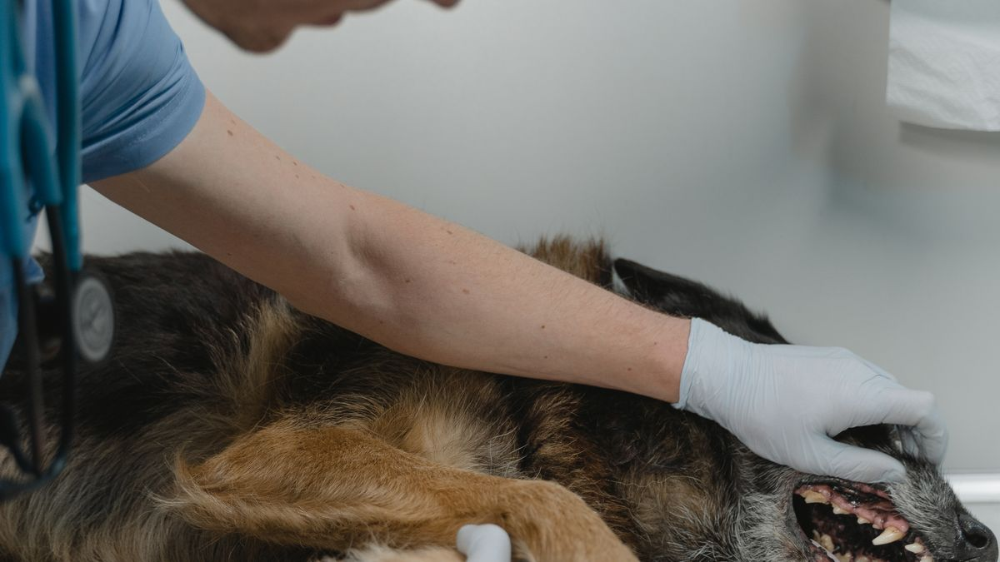
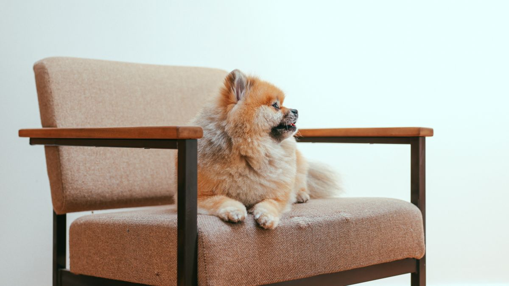
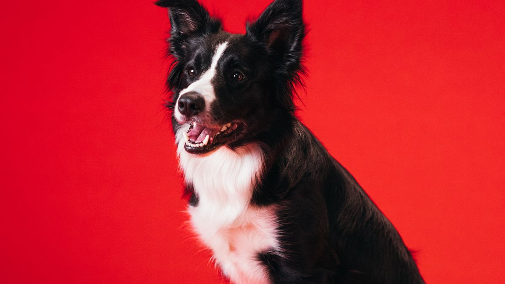

그루밍이 생활 관리인 이유
빗질은 털 정리를 넘어 피부·혹·벼룩 흔적을 주 3회 확인하는 습관입니다. 한 번에 30분 하기보다 하루 5분×주 3회가 대부분의 개체에게 부담이 적습니다.

미용실을 6주마다 가면 연 8~9회, 회당 5만 원 기준 연 40만 원입니다. 집에서 5분 관리로 방문 간격을 8~10주로 늘릴 수 있는 경우도 있습니다.
기본 순서 예시
- 조용한 공간에서 3~5분 빗질(목→등→옆구리 순)
- 발바닥 패드·발톱 길이 확인(2~3주마다 1~2mm 절단)
- 눈곱·귀 바깥쪽만 가볍게 확인(귓속 깊이 X)
- 마무리 간식 1개 또는 30초 쓰다듬기
싫어하는 부위는 다음 날 2분만 따로 진행합니다. 한 세션 10분을 넘기면 다음날 거부 반응이 늘어납니다.
도구 선택 시 참고
짧은 털: 고무 브러시(5천~1만 원). 중·장모: 핀 브러시+콤(1~2만 원 세트). 고양이: 슬리커 브러시 대신 부드러운 글로브(8천 원)로 시작하세요.
피부에 붉은 반점이 5분 빗질 후에도 30분 이상 남으면 압력을 절반으로 줄입니다.
계절별 조정
환절기(3·9월)에는 빗질을 주 4~5회로 늘리고, 여름에는 발바닥 털만 2주에 1회 정리합니다. 겨울 건조 시에는 빗질 후 물 분무 2~3회로 정전기를 줄일 수 있습니다.

실전 적용 노트
그루밍은 미용실 방문을 대체하기보다, 집에서 5분×주 3회 관찰하는 습관에 가깝습니다. 피부·털·발·귀를 짧게 자주 보면 병원 방문 시 설명할 근거가 생깁니다.

한 번에 30분 하기보다 TV 광고 끝나는 3분을 빗질 타임으로 정하면, 별도 캘린더 없이도 자연스럽게 접촉 빈도가 늘어납니다.
불편해하면 억지로 길게 하지 말고, 다음 날 2분만 다시 시도하세요. 스트레스가 쌓이면 그루밍 자체를 거부하는 패턴이 고착화될 수 있습니다.
환절기에는 빗질 빈도를 늘리고, 여름에는 발바닥 털만 짧게 정리하는 식으로 계절별로 조정합니다. 겨울 건조 시에는 빗질 후 물 분무 2~3회로 정전기를 줄일 수 있습니다.
도구는 많을수록 좋지 않습니다. 짧은 털·중장모·고양이별로 1~2개만 고르고, 2주 써 본 뒤 불편하면 교체하세요.
이번 주 목표는 완벽한 1분이 아니라 '이번 주 2회 성공'입니다. 0회보다 1회가 낫습니다.
귀 세정은 면봉을 깊이 넣지 않습니다. 겉 귀 윗부분만 닦고, 냄새·분비물이 3일 이상 지속되면 스스로 치료하지 말고 검진을 검토하세요.
발톱은 '딸깍 소리가 날 때'보다 2주 주기로 짧게 다듬는 편이 안전합니다. 분홍빛 혈관이 보이면 그 아래는 자르지 않습니다.
목욕은 '냄새가 난다'는 이유만으로 자주 하기보다, 오염·피부 상태를 보고 월 1~2회부터 시작하는 집이 많습니다.
이번 주 그루밍 체크리스트입니다. 한 번에 다 하지 않아도 됩니다.
- 이번 주 빗질·털 정리를 2회 이상 시도했습니다.
- 피부에 붉음·각질·벼룩 의심 부위를 30초 이상 봤습니다.
- 발톱·발바닥 패드를 손전등 없이도 육안으로 확인했습니다.
- 귀 냄새·분비물을 기록했고, 3일 이상 지속 시 검진을 검토합니다.
- 그루밍 도구를 1~2개로 줄였고, 불편한 도구는 치웠습니다.
- 거부 반응이 있으면 2분 이하로 줄이고 다음 날 다시 시도합니다.
- 환절기·건조 시 분무 2~3회로 정전기를 줄였습니다.
- 그루밍 직후 간식·휴식으로 긍정 연결을 한 번 이상 했습니다.
완벽한 10분보다 '이번 주 2회 성공'이 다음 주로 이어지기 쉽습니다.
그루밍은 미용실 대체가 아니라, 피부·털·귀·발을 '자주 짧게' 보는 습관입니다. 이번 달 목표를 '주 2회 성공'으로만 잡아도, 0회에서 벗어나는 것만으로 다음 달 난이도를 올리기 쉽습니다. 거부가 반복되면 도구·자세·시간대를 바꾸고, 붉음·냄새·통증 의심은 7일 메모와 함께 검진을 검토하세요.
실전 노트는 하루에 전부 적용하기보다, 체크리스트 3개만 골라 2주 반복하는 방식이 오래 갑니다. 잘 되는 항목만 남기고 나머지는 과감히 빼도 괜찮습니다.
마무리로, 이번 주에는 체크리스트 3개만 골라 2주 반복해 보세요. 작은 성공이 쌓이면 나머지는 자연스럽게 늘어납니다.
기록이 쌓이면 병원·상담 때 설명이 쉬워집니다. 한 줄 메모라도 같은 항목으로 이어 쓰는 것이 핵심입니다.
완벽한 루틴보다 80% 지켜지는 루틴이 오래 갑니다. 안 된 날은 원인 한 줄만 적고 다음 주에 조정하세요.
오늘 당장 하나만 고른다면, 체크리스트 맨 위 항목부터 시작해 보세요. 나머지는 다음 주로 미뤄도 괜찮습니다.
가족이 함께 돌본다면, 누가 했는지 체크박스 한 칸만 추가해도 누락·중복이 줄어듭니다.
검색으로 답을 찾기 전에 7일 메모를 먼저 정리해 보세요. 증상 설명이 훨씬 빨라지는 경우가 많습니다.
새 용품·새 사료·새 루틴은 동시에 바꾸지 않습니다. 한 가지만 바꾸고 5일 관찰하는 편이 안전합니다.
정리하며
그루밍 영상에서 20분짜리 완벽 루틴을 보면 부담이 커집니다. 현실은 소파 앞 3분이 전부인 날이 많습니다.
저도 일주일에 한 번은 발톱을 깜빡합니다. 완벽한 루틴보다 '이번 주에 한 번이라도 손을 댔는가'가 더 솔직한 기준 같습니다.
이번 주 목표는 5분×3회입니다. 한 번이라도 손을 댔다면 이미 앞으로 나아간 것입니다.
초보자가 자주 실수하는 포인트
- 한 번에 30분 이상 억지로 진행
- 잘못된 빗으로 피부 긁힘
- 귀 안쪽 3cm 이상 파고듦
- 발톱을 한꺼번에 5mm 이상 절단
- 그루밍 후 보상 없이 반복
체크리스트
- 5분 그루밍 시간 TV 광고에 맞추기
- 털 길이에 맞는 빗 1개 준비
- 발톱 2~3주 주기 캘린더
- 마무리 간식·쓰다듬기 습관
- 붉은 반점·탈모 패턴 메모
자주 묻는 질문
- 얼마나 자주 빗질해야 하나요?
- 짧은 털은 주 2~3회 5분, 긴 털은 매일 3~5분이 일반적입니다. 환절기에는 주 1회 더 늘려 보세요.
이 글은 초보자 기준으로 이해하기 쉽게 정리되었으며, 내용은 운영 과정에서 순차적으로 보완될 수 있습니다. 수의사 등 전문가의 진단·처치를 대체하지 않습니다.